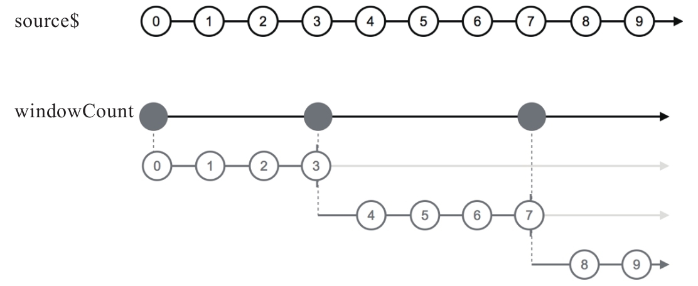
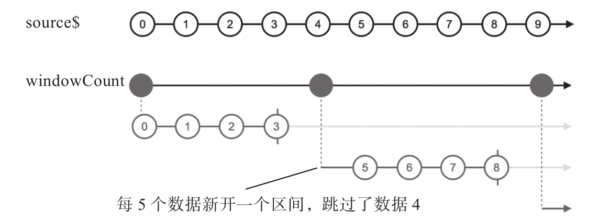

RxJS提供了根据时间参数来界定区间的windowTime和bufferTime，也很贴心地提供了根据数据个数来界定区间的windowCount和bufferCount。
使用windowCount的示例代码如下：
const source$ = Observable.timer(0, 100); const result$ = source$.windowCount(4);
windowCount和windowTimer一样产生高阶Observable对象，弹珠图如图8-6所示。

图8-6 windowCount的弹珠图
windowCount还支持可选的第二个参数startWindowEvery，如果不使用第二个参数，那么所有的时间区间没有重叠部分；如果使用了第二个参数，那么第一个参数依然是时间区间的长度，但是每间隔第二个参数startWindowEvery的毫秒数，就会新开一个时间区间。
下面是使用第二个参数startWindowEvery的示例代码：
const result$ = source$.windowCount(4, 5);
我们故意让第二个参数比第一个参数更大，这样就会展示丢弃部分上游的数据，弹珠图如图8-7所示。

图8-7 第二个参数大于第一个参数的windowCount弹珠图
对于bufferCount，和windowCount一样，区别只是传给下游的是缓存数据组成的数组。